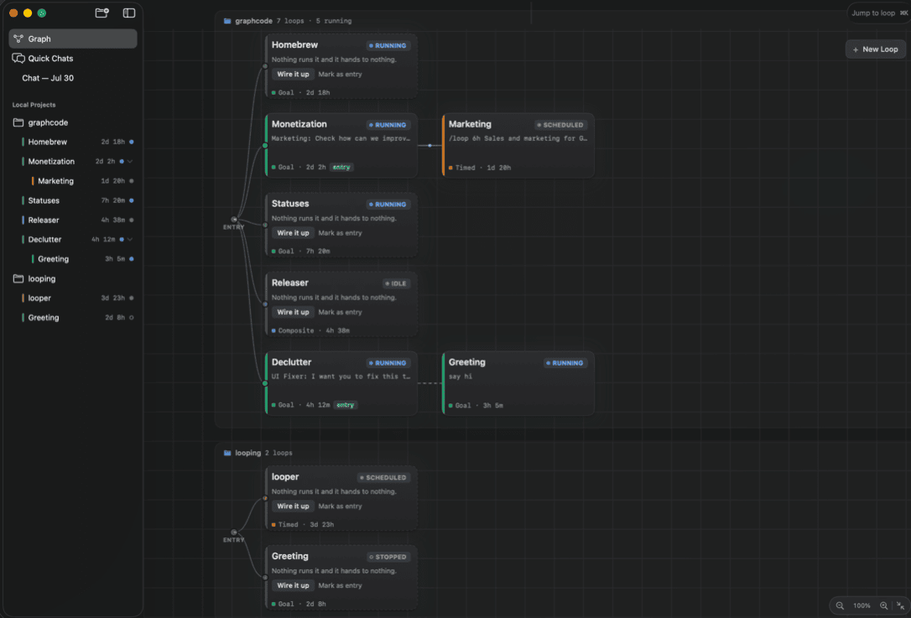

A loop is an agent session that runs on repeat. GraphCode connects loops on a canvas — they run unattended, bounded, and still live, so you can attach to any one of them mid-run and steer.
Put an agent on repeat and you hand off exactly one thing: the check, the stop condition, the trigger, or the prompt itself. That's the whole space.
Pauses each turn until you say go. For a refactor you eyeball step by step.
Runs until the goal is met — optionally proven by a shell command exiting 0.
A cadence in the prompt: /loop 1h triage new bug reports.
A pipeline that plans its own steps and runs a sub-graph end to end.
A loop finishes its fix, you tell it "merge and ask Release for the next beta" — and it messages the Release loop, running in a different repo's graph. Delivered live if the peer is awake, staged into its memory if it isn't.
A workspace is a whole second GraphCode — its own projects, loops and daemon, in its own window with its own Dock tile. ⌥⌘1…9 to switch, or put one on each screen. Nothing is shared between them — and a loop in one can still message a loop in the other, straight into its running session.
Every loop is a zmx session — a PTY that survives quitting the app, restarting the daemon, or rebooting. Click a node and you attach to the terminal that did the work, live, with one scrollback.
A maker, a reviewer, and a guarded back-edge closing the cycle. The feature that lets a loop repeat is the same feature that bounds it — so "loop forever, spending tokens" can't be said by accident.
The orchestrator runs your metric command once per pass, so recorded numbers come from the measurement — never the loop's self-report.
The daemon records facts, the agent records lessons. A relaunched session opens by reading the digest — round two starts smarter, not from scratch.

Fires when the source resolves, unblocking the target.
Injects text into a running peer. Staged if it's asleep.
Instantiates a copy from a template. Children die with their parent.
App and CLI are both clients speaking length-framed JSON over ~/.graphcode/graphcoded.sock. Validation lives in the daemon — a rule only one client enforces isn't a rule.
Add a folder, write a goal — GraphCode names the loop for you. Connect a second with an edge. Then close the app; the loops won't notice.